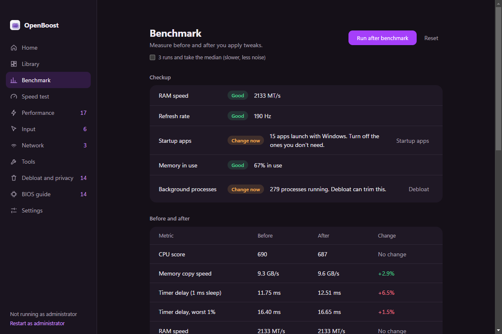
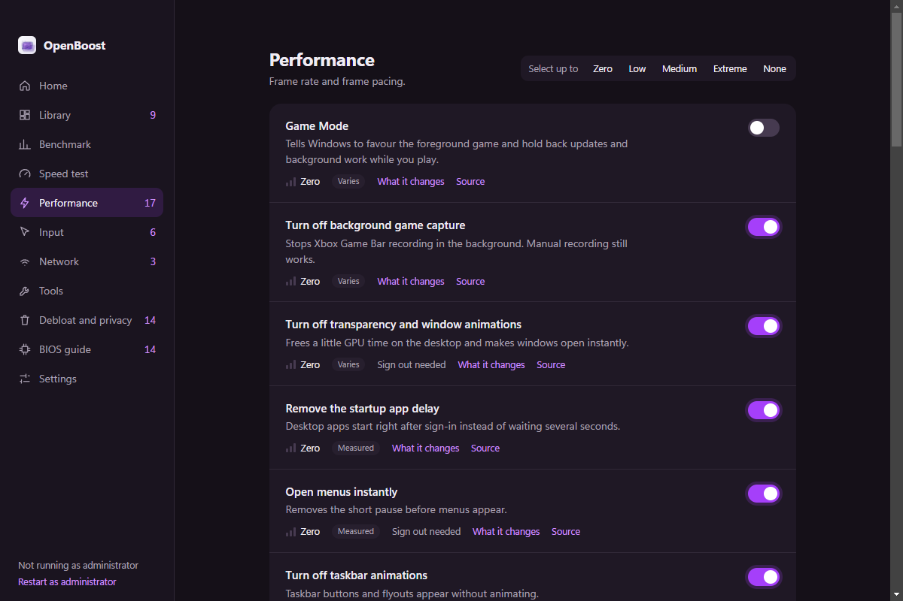
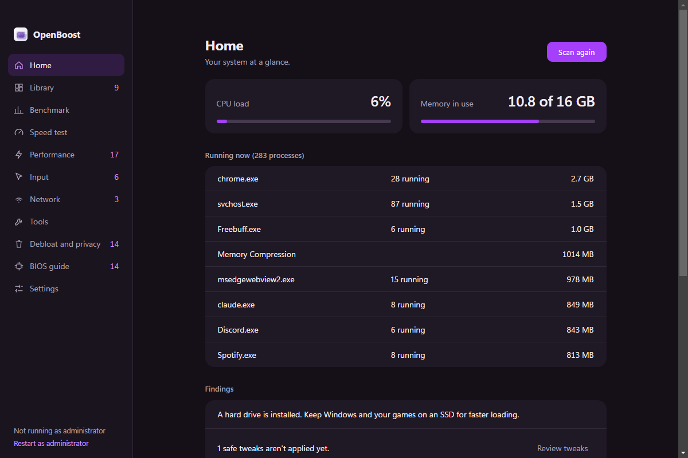
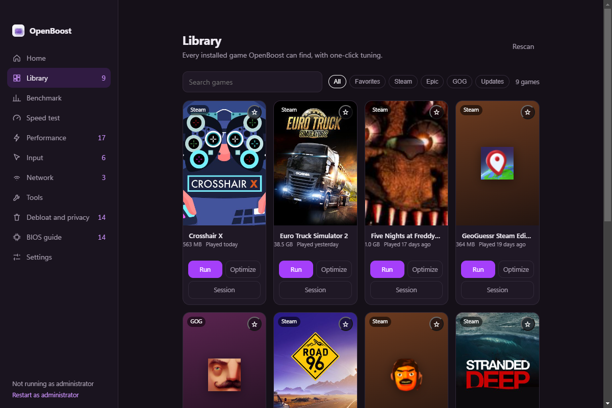

Every change keeps its original.
Registry values, service start types and the active power plan are saved before the first write.
OpenBoost saves the original value of every tweak, previews the exact change, and benchmarks whether it actually did anything.
The benchmark runs before and after a batch, three times, and reports the median. On this machine, one metric improved. Three did not. The app says so.
One measured run on this machine. A different CPU, GPU or background app will move the numbers. The point is the comparison, not the score.

Fifty-five tweaks, each with a risk level, an expected impact and a Microsoft source. Three verdicts keep the list honest.
| Verdict | Examples | What it means |
|---|---|---|
| Measured | Startup delay, menu delay, mouse acceleration | A clear, repeatable effect. Still benchmark it on your machine. |
| Varies | Game Mode, hardware GPU scheduling, fullscreen optimizations | Helpful on some machines and harmful on others. Test, then keep or undo. |
| Often placebo | QoS cap, network throttling, global timer resolution | Usually too small to feel. They stay because people ask for them. |
OpenBoost also warns when a tweak can interfere with kernel anti-cheat, and tells you when a saved value was changed outside the app. Read the tweak definitions.

Before a tweak is applied, OpenBoost writes down the current registry value, service start type or power plan. Undo puts that exact value back.
Registry values, service start types and the active power plan are saved before the first write.
See every before → after line before anything is written. Cancel if a line looks wrong.
If a saved value no longer matches, Undo asks whether to keep the outside change or restore yours.
App removal is the one action without a saved original. The app says so before it runs.
GameBar\AutoGameModeEnabledGameBar\AllowAutoGameMode
OpenBoost reads Steam, Epic and GOG manifests directly. It shows what is installed, how large it is, when you last played, and whether an update is waiting.

Run a game, apply a reversible per-game optimization, or start a Session that restores the tweaks when the game closes.
The installer adds shortcuts. The portable build runs from any folder. Both are unsigned; check the SHA-256 on the release page.
Downloads open the latest GitHub release; everything stays on this PC.
Straight answers to the things people ask before running a tweaking tool.
Is it safe? Every reversible tweak saves its original value first. Preview shows the exact change, and Settings restores everything OpenBoost backed up.
Will it raise my FPS? Sometimes. Game Mode and GPU scheduling vary by machine. The benchmark exists so you can see when they do not.
Does it need administrator rights? Some tweaks write to HKLM or change services. The app marks those and offers a restart as administrator.
Why is the build unsigned? Code signing costs money and this is an independent project. The source and SHA-256 are public; verify them before running.
What cannot be undone? Removing preinstalled apps. Everything else keeps a saved original; a few changes need a sign-out or restart.
Does it collect anything? It collects nothing. The diagnostics export is manual and redacts your account name.
Which Windows versions? Windows 10 and 11, 64-bit. A tweak that needs a newer build is disabled instead of applied blindly.
Node 20 or newer and Electron. Clone it, install, start. The tweak definitions are plain objects, so you can read every change before it runs.
Open the repositorygit clone https://github.com/ExbotsSites/OpenBoost.git
cd OpenBoost
npm install
npm start